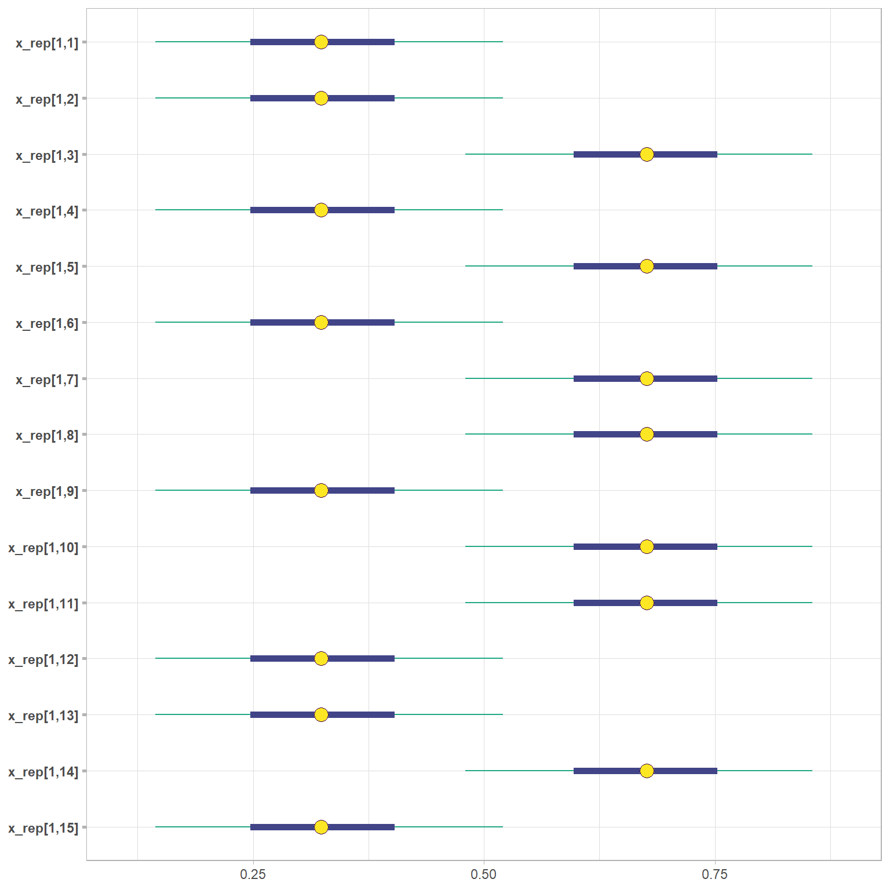
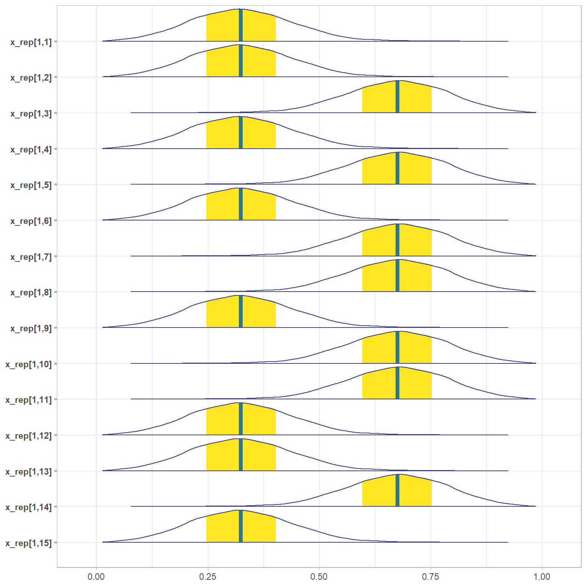
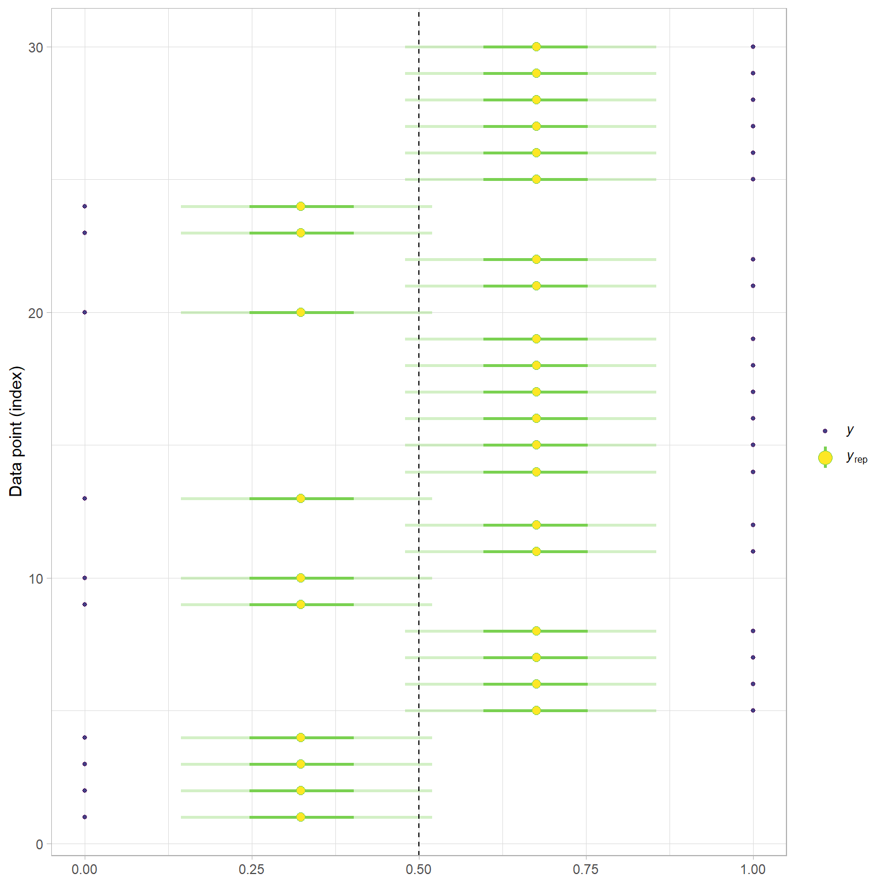

As mentioned in the previous post, the first model I will be running in Stan is a Bayesian Network with 3 latent attributes with edges from these attributes to the 15 observed items. I will be creating the data and I am sure there will be issues since the items and the Q-matrix are being created randomly. Along with using the cmdstanr package to call on Stan for the Bayesian analyses, I am using the posterior package to manipulate the chains, iterations, and draws from the analyses and the bayesplot package to visualize the convergence of each parameter included in the bayes net model. I’m also using the reactable package to showcase the parameters for the model.
Next, it is easiest to put your Stan data into a list. So here I take all the tibbles I created for my data, the Q-matrix, and the attribute profile matrix and only call on the columns and rows that are crucial for the bayes net model. For instance, The J, I, K, and C list values are all important for looping through:
J = The number of rows of data; in this case there are 30 “students”
I = The number of columns in the dataset; which is 15 excluding the first column
K = The number of latent attributes/skills
C = The number of rows in the attribute profile matrix. Each row is a latent class with a different set of attribute mastery proficiencies.
Additionally, we also need to include the actual data to be referenced in our analysis in Stan. For some reason, I decided to shift from y for the actual data and then X in the analyses. I think I did this from some of the resources I used having X and then other resources using y. In any case, I will draw attention to the data and reference back to the values either being y or X.
This next part will be different depending on whether or not you are using RStan or like in this case cmdstanR. If you look up the RStan documentation, I am sure you can find a beginner-friendly tutorial that shows how you would conduct the analysis. For cmdstanR, you call on your Stan file. Below is the Stan code or if you’d like to see it side-by-side, the Stan file can be found here. I have kept the defaults and I always include the arguments for the number of warmup iterations and the sampling iterations, just in case I want to make changes to the number of iterations.
Code
"data { int<lower=1> J; // number of examinees int<lower=1> I; // number of items int<lower=1> K; // number of latent variables int<lower=1> C; // number of classes matrix[J, I] X; // response matrix matrix[I, K] Q; // Q matrix matrix[C, K] alpha; // attribute profile matrix}parameters { simplex[C] nu; // class probabilities vector<lower=0, upper=1>[I] false_pos; vector<lower=0, upper=1>[I] true_pos; real<lower=0, upper=1> lambda1; real<lower=0, upper=1> lambda20; real<lower=0, upper=1> lambda21; real<lower=0, upper=1> lambda30; real<lower=0, upper=1> lambda31;}transformed parameters{ vector[C] log_nu; vector[2] theta_log1; vector[2] theta_log2; vector[2] theta_log3; vector[C] theta1; vector[C] theta2; vector[C] theta3; matrix[I, C] delta; log_nu = log(nu); theta_log1[1] = bernoulli_lpmf(1 | 1 - lambda1); theta_log1[2] = bernoulli_lpmf(1 | lambda1); theta_log2[1] = bernoulli_lpmf(1 | lambda20); theta_log2[2] = bernoulli_lpmf(1 | lambda21); theta_log3[1] = bernoulli_lpmf(1 | lambda30); theta_log3[2] = bernoulli_lpmf(1 | lambda31); for (c in 1 : C) { if (alpha[c, 1] > 0) { theta1[c] = theta_log1[2]; } else { theta1[c] = theta_log1[1]; } if (alpha[c, 2] > 0) { theta2[c] = theta_log2[2]; } else { theta2[c] = theta_log2[1]; } if (alpha[c, 3] > 0) { theta3[c] = theta_log3[2]; } else { theta3[c] = theta_log3[1]; } } for(c in 1:C){ for(i in 1:I){ delta[i, c] = pow(exp(theta1[c]), Q[i, 1]) * pow(exp(theta2[c]), Q[i, 2]) * pow(exp(theta3[c]), Q[i, 3]); } }}model { real pie; vector[I] log_item; vector[C] log_lik; // Priors lambda1 ~ beta(2, 1); lambda20 ~ beta(1, 2); lambda21 ~ beta(2, 1); lambda30 ~ beta(1, 2); lambda31 ~ beta(2, 1); for (i in 1 : I) { false_pos[i] ~ beta(1, 2); true_pos[i] ~ beta(2, 1); } //Likelihood for (j in 1 : J) { for (c in 1 : C) { for (i in 1 : I) { pie = pow(true_pos[i], delta[i, c]) * pow(false_pos[i], (1 - delta[i, c])); log_item[i] = X[j, i] * log(pie) + (1 - X[j, i]) * log(1 - pie); } log_lik[c] = log_nu[c] + sum(log_item); } target += log_sum_exp(log_lik); }}generated quantities { real pie; vector[I] log_item; matrix[J, C] prob_resp_class; // posterior probabilities of respondent j being in latent class c matrix[J, K] prob_resp_attr; // posterior probabilities of respondent j being a master of attribute k row_vector[C] prob_joint; vector[C] prob_attr_class; matrix[J, I] x_rep; for (j in 1 : J) { for (c in 1 : C) { for (i in 1 : I) { pie = pow(true_pos[i], delta[i, c]) * pow(false_pos[i], (1 - delta[i, c])); log_item[i] = X[j, i] * log(pie) + (1 - X[j, i]) * log(1 - pie); } prob_joint[c] = nu[c] * exp(sum(log_item)); //here is where the problem starts with trying to correctly classify students with proficiency mastery } prob_resp_class[j] = prob_joint / sum(prob_joint); } for (j in 1 : J) { for (k in 1 : K) { for (c in 1 : C) { // Calculate the probability of mastering attribute k given class c prob_attr_class[c] = prob_resp_class[j, c] * alpha[c, k]; } // Sum the probabilities to get the posterior probability of mastering attribute k prob_resp_attr[j, k] = sum(prob_attr_class); } } for (j in 1 : J) { for (c in 1 : C) { for (i in 1 : I) { x_rep[j, i] = X[j, i] * log(pie) + (1 - X[j, i]) * log(1 - pie); } } }}"
Looking over the Stan code, there is a lot here. I’ll break down each section, but will not be spending an extensive amount of time for each.
Code
"data { int<lower=1> J; // number of examinees int<lower=1> I; // number of items int<lower=1> K; // number of latent variables int<lower=1> C; // number of classes matrix[J, I] X; // response matrix matrix[I, K] Q; // Q matrix matrix[C, K] alpha; // attribute profile matrix}"
The data section of stan code is including what you called the components of the stan_filelist object. If you deviate from what you named the components in your list, then your model will show an error. While not entirely necessary, you may want to put constraints on these values. For instance, I know that I have more than 1 student, item, latent variable, and class, so I will put a constraint that the lowest possible value is 1.
The parameters section includes any parameters that are being included in your model. For instance, if creating a Bayesian linear regression, you would include the alpha and beta parameters in this section. For these models, I have the class probabilities for each latent class (to read more about the simplex function see here). Then I will have the probabilities of a student being either a true or false positive mastery case for the latent classes. These are vectors due to there being a true and false positive parameter for each item. The last parameters are the lambda parameters, which are the probabilities for mastery of the three latent attributes. These often require expert domain knowledge to specify informative priors.
While this section is optional, I like to include it because I use this section to do many of my calculations. For instance, in this section I like to use the prior lambda values to get the log probabilities of theta_log values, which are the log probabilities based on the level of mastery from the lambda values. I looped through the latent classes so when a latent class’ value is 1, then it takes the greater log probability, and when the value is 0, then it takes the lower log probability. I also did my delta calculations in this section. The delta calculation takes theta values based on the latent classes values and it uses the Q-matrix for each item. Then by multiplying the theta values raised to the power of the Q-matrix gets the probability of mastery for each item within each latent class. This value indicates whether a given student will have mastery over all of the latent attributes.
Code
"model { real pie; vector[I] log_item; vector[C] log_lik; // Priors lambda1 ~ beta(2, 1); lambda20 ~ beta(1, 2); lambda21 ~ beta(2, 1); lambda30 ~ beta(1, 2); lambda31 ~ beta(2, 1); for (i in 1 : I) { false_pos[i] ~ beta(1, 2); true_pos[i] ~ beta(2, 1); } //Likelihood for (j in 1 : J) { for (c in 1 : C) { for (i in 1 : I) { pie = pow(true_pos[i], delta[i, c]) * pow(false_pos[i], (1 - delta[i, c])); log_item[i] = X[j, i] * log(pie) + (1 - X[j, i]) * log(1 - pie); } log_lik[c] = log_nu[c] + sum(log_item); } target += log_sum_exp(log_lik); }}"
For the model section, which is necessary, I always start with declaring any new variables, followed by priors for my lambda values and the true and false positive probabilities for each item. Lastly, this section is always where you will do your calculations for each item and for each latent class. Finally, the target calculation at the end is for the target log density.
Code
"generated quantities { real pie; vector[I] log_item; matrix[J, C] prob_resp_class; // posterior probabilities of respondent j being in latent class c matrix[J, K] prob_resp_attr; // posterior probabilities of respondent j being a master of attribute k row_vector[C] prob_joint; vector[C] prob_attr_class; matrix[J, I] x_rep; for (j in 1 : J) { for (c in 1 : C) { for (i in 1 : I) { pie = pow(true_pos[i], delta[i, c]) * pow(false_pos[i], (1 - delta[i, c])); log_item[i] = X[j, i] * log(pie) + (1 - X[j, i]) * log(1 - pie); } prob_joint[c] = nu[c] * exp(sum(log_item)); } prob_resp_class[j] = prob_joint / sum(prob_joint); } for (j in 1 : J) { for (k in 1 : K) { for (c in 1 : C) { // Calculate the probability of mastering attribute k given class c prob_attr_class[c] = prob_resp_class[j, c] * alpha[c, k]; } // Sum the probabilities to get the posterior probability of mastering attribute k prob_resp_attr[j, k] = sum(prob_attr_class); } } for (j in 1 : J) { for (c in 1 : C) { for (i in 1 : I) { x_rep[j, i] = X[j, i] * log(pie) + (1 - X[j, i]) * log(1 - pie); } } }}"
The last section, the generated quantities, is “generate additional quantities of interest from a fitted model without re-running the sampler” (Stan). For this series, I am using this section to calculate posterior probabilities, such as the probability of a student being in a specific latent class and the probability that students have mastered the attributes.
Code
fit <-read_rds(here::here("posts/2024-11-14-bayes-net-part2-estimation/simple_bayes_net.RDS"))fit$diagnostic_summary()
I also included the summarized convergence measures and summary statistics for all of the draws. I also will create an interactive table to look over the posterior draws of each parameter.
I decided to filter in on the probabilities for students to have mastery over the attributes. The first index in the square brackets indicates the student and then the second index value indicates the three attributes. Obviously for something more thought out this would line up for meaningful attributes, but for this example, the values align with arbitrary values.
Next, I decided to compare the probabilities of each item for one student by having a sequence going from 1 to 450 (end of the columns in the matrix) to get the draws for the first student. As we can see from the traceplots for the first student and the original data, the original responses and the probabilities with a probability threshold of 0.5 match one another.
Code
mcmc_intervals(exp(y_rep[,seq(1, 450, 30)]))

Code
mcmc_areas(exp(y_rep[,seq(1, 450, 30)]))

Code
ppc_intervals(y = y |>pull(y1) |>as.vector(),yrep =exp(y_rep[, 1:30])) +geom_hline(yintercept = .5, color ="black", linetype =2) +coord_flip()

I enjoy using traceplots just to see how the iterations are doing and that they look like radio static. If we do not wish to use traceplots, we can also use intervals or areas. Both of which show the credible intervals of our probabilities. Lastly, there is the option to use the posterior predictive check intervals where we can compare the probabilities to the actual responses in the same plot. At least for the first student we can see that the replicated data matches the actual data well.
The last thing I thought to do for this analysis was to create an artificial dataset of all the student attribute mastery responses. I will use this to compare the accuracy of our model in correctly classifying if students had mastery on all of the attributes.
For the probabilities, first I will get the average of the draws for each student and their probability of mastery for each of the three attributes. I again used a threshold of 0.5 for classifying whether a student met mastery of each attribute and then did some manipulation to get the data into a wide format where each attribute is its own column and each student is a row. We can how see how well the model classifies these students into mastery of each attribute.
As shown above, we can see the counts and percentages for the classification of each attribute. We can see that the problem is that the model is predicting that students are mastering each attribute when they have not mastered the attribute. This is resulting in several false positives for the model.
Finally, I pivoted the data to be long so I could compare the values for the actual responses and the posterior draws to show the accuracy of this model. The accuracy value shows that this model was not that accurate with a value of 58%. This is a good starting point, but this may indicate that the model needs better defined priors and may require the edges between the attributes to show latent relationships. The low accuracy value may also be indicative of the importance of domain knowledge in building a latent bayes net.